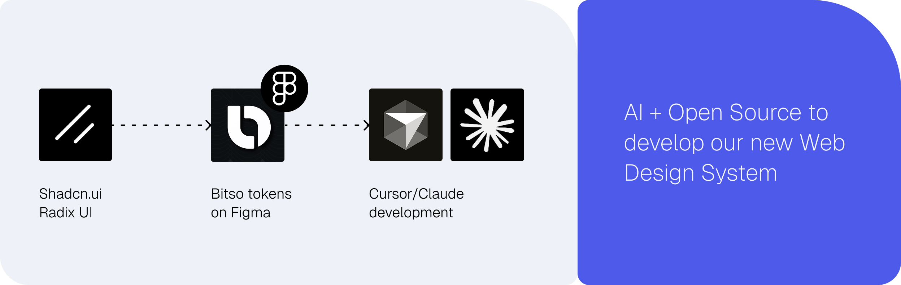

Bitso Business Dashboard
Bitso Business, the enterprise arm of Latin America's leading crypto-financial platform, was running its B2B operations — cross-border payments, FX, treasury management — on a web interface mirrored from the legacy retail consumer wallet. Business users moving millions monthly were navigating memecoins, had no visibility into balances or transaction statuses, and operated without multi-account support. The platform was actively working against retention: data showed non-API users churning at 6.58%, nearly ten times the 0.67% rate of API users who bypassed the interface entirely.
I led the design strategy to change that. Over some months, I defined the end-to-end vision for a purpose-built business platform — new information architecture, new navigation, a real-time operational homepage, multi-account payments, and a full web design system co-created from zero using AI and open-source foundations. I set the direction, established the structural and visual foundations, and guided a team of designers through execution across every surface.
Timeframe: 6 months

About Bitso Business
Bitso is the leading crypto-financial platform in Latin America. Bitso Business is its B2B arm, a platform that enables companies to perform cross-border payments, FX operations, OTC trading, and treasury management using stablecoins (USDT, USDC) as rails across currencies like MXN, USD, BRL, ARS, COP, and EUR.
Clients range from payment aggregators and remittance companies to fintechs and large enterprises operating across LATAM, the U.S., and Europe.
Scenario
Bitso was undergoing a company-wide rebrand, and refreshing the Business platform was a natural part of that movement — but the real challenges went far deeper than visual alignment. Business clients were trapped inside an interface designed for retail crypto users. The gap between what enterprise clients needed to operate and what the platform offered was wide, measurable, and growing.
What the data told us
The strongest signal was the churn delta: customers using Bitso's APIs — who never touched the platform's UI — had a revenue churn of just 0.67%. Non-API users, the ones depending on the interface for their daily work, churned at 6.58%. The platform experience was a key lever for retention and it was failing.
Customer Support reinforced the picture. A significant share of incoming tickets were about information that should have been self-service but simply wasn't available or findable in the platform. Clients were reaching out to ask about their monthly transaction limits, to request breakdowns of operations per sub-account (critical for users with the multi-account feature enabled), and to generate reports they had no way to pull on their own. The support team was functioning as a proxy for missing product functionality, absorbing a load of 20% to 30% tickets per month on topics that a well-designed dashboard would eliminate entirely.
What clients experienced
A retail interface that confused business users. The homepage was dominated by crypto tokens and altcoin listings. There was no visibility into balances across currencies, no transaction status tracking, no operational data at a glance. Business users had to mentally filter out noise that had nothing to do with their work.
Manual processes for critical payment flows. OTC trading, and the activation of US Wire, SWIFT, and SEPA for Euro transactions, all required back-and-forth coordination with internal teams. There were no self-service paths for operations that clients needed to execute weekly.
No business-specific tools. Lack of reporting tools, reconciliation exports, fee transparency, and treasury management dashboards. Multi-user and multi-account structures were non-existent.
Buried product discovery. Clients often didn't know what services were available to them. New ramps, payment rails, and treasury tools were invisible in the navigation. Cross-selling depended entirely on Account Managers remembering to mention them.
Expected achievements
Reduce churn among non-API users by giving them a purpose-built interface that eliminates the friction driving them to leave.
Shift the platform from an occasional portal to a daily operational hub, replacing the need to contact Account Managers or open support tickets for basic operational data.
Make it structurally easy for clients to discover and activate services like SEPA, SWIFT and treasury tools through contextual visibility in the interface.
Give clear visibility into fees, volumes, transaction statuses, and account limits through real-time dashboards.
Enable parent/sub-accounts, role-based permissions, and cross-account visibility for clients managing multiple subsidiaries or regional operations.


Drag to compare ↔ — the original retail-oriented interface x the new business dashboard. The redesign replaced token listings with operational data, balance visibility, and business-relevant workflows front and center.
Role
I led the design strategy — defining the vision, structure, and visual direction for the entire initiative — then guided a team of designers through execution across all surfaces.
I worked alongside a Product Director (Alexandre Santos Spengler), an Associated Product Manager (Diego M. Gutierrez Cordova), and closely with Key Account Managers who provided continuous client context throughout the project.
I directed the design work of Michael Carvalho Pinto Da Cunha, who shared with me the responsible for part of screen-level UI execution under my guidance.
What I personally owned:
- The end-to-end design strategy: information architecture, navigation model, visual direction, and design principles for the entire platform
- Research leadership: structuring the discovery program, running enterprise client interviews, synthesizing findings into design requirements
- Co-creation of the web design system from zero — defining tokens, component logic, and governance — using AI tools and open-source foundations
- Cross-functional decisions: migration strategy, Figma workspace structure, phased rollout planning, and alignment with engineering on technical constraints
What I directed:
- Part of the UI execution across all key surfaces (homepage, payments, reporting, trading, account switcher)
- Visual refinement and component-level decisions within the design system
- Events mapping and dashboard creations in Amplitude
- Screen-level QA and design review before each engineering handoff
Process
Discovery Insights
We ran a structured discovery program combining internal stakeholder knowledge with direct enterprise client research. We organized the research around six themes that emerged from an initial landscape review: daily usage and pain points, reporting and reconciliation, navigation and information-finding, trading workflows, multi-account needs, and cross-selling opportunities.
We layered in data from previous research cycles, behavioral analytics, and a competitive benchmarking exercise covering 5 platforms of big competitors.
Four findings drove the direction of the redesign:
Business clients don't hold altcoins, and the retail UI confused them. 80% of Business accounts held only stablecoins (USDT, USDC) and fiat currencies. The presence of memecoins and altcoin listings on the homepage was irrelevant and was actively eroding trust. Multiple clients described the interface as feeling "consumer-grade" and "not built for us."
- Reporting was critical and completely broken. 15% of support tickets in the Business segment were related to transaction exports, fee breakdowns, or reconciliation data. Clients needed this information for compliance, accounting, and operational tracking — and the platform couldn't provide it without manual intervention.
- Multi-user access was a genuine blocker. Enterprise clients managing multiple subsidiaries or regional operations couldn't switch between accounts without logging out. 2 of our top-revenue clients had explicitly flagged this as a reason they considered alternatives.
- Operational visibility was nearly nonexistent. Clients couldn't see their real-time balances across currencies, had no way to find how to activate SWIFT or SEPA transactions, and had no visibility into fee structures. This information existed in Bitso's systems but was never surfaced easily in the UI.

Information Architecture
The existing navigation was inherited from the retail product and organized around crypto concepts: wallets, tokens, trading pairs. None of this mapped to how business clients thought about their work. We rebuilt the information architecture from scratch, organizing around business workflows rather than product features.
Before (retail model): Wallet (token listings) → Trading; Settings
After (business model): New real-time dashboard/home → Payments (pay-ins / payouts with status tracking); Trading (OTC); Reports (self-service exports); Limits; Settings (accounts, permissions, API keys)
The restructuring was informed directly by the research: we mapped the top 5 jobs-to-be-done enterprise clients performed weekly, ranked by frequency from analytics data and validated in interviews. The new navigation puts the most common workflows — performing pay-ins and payouts, tracking payments, generating reports, switching accounts — within one click of the homepage.
Design System
Building a new platform from scratch meant we needed a complete component library.
We made a deliberate architectural decision: use open-source component libraries as the structural base (getting accessibility, responsiveness, and interaction patterns out of the box from the Radix UI), apply Bitso's new brand identity tokens as a theming layer on top, and use AI tools to accelerate the parts of design system work that are typically the slowest.
Open-source foundations gave us production-ready components with tested interaction patterns, keyboard navigation, and screen reader support — things that would have taken a lot more to build and validate from scratch.
AI-assisted generation compressed the most time-intensive parts of the process. We built that at the same time AI were evolving to support even more the component creation process. It helped a lot to a) write prompt-format descriptions of each component to be better read by LLMs and b) built the proper component and its variants using MCP and skills on Cursor and/or Claude Code.
The design system shipped with a contribution model: new components required a proposal, a review cycle, and documentation before being added to the library. This kept the system from fragmenting as multiple designers worked in parallel across surfaces.

Key design decisions
We created a homepage to be a financial operations center. The old homepage showed token prices. The new homepage was designed as a real-time operational dashboard — the first thing a business user sees when they log in. It surfaces real-time balances per currency, transaction statuses across payment rails (SEPA, SWIFT, SPEI, PIX), volume and fee metrics for the current period, failed transfer alerts requiring attention, limits control and visibility around which account are you operating and with which role.
What we rejected: An early concept organized the homepage around product categories into tabs (Payments, Trading, Treasury) as separate modules. Validation process showed this created cognitive overhead: users didn't think in product categories, they thought in operational questions. We shifted to a status-and-action model instead.

The account switcher is a persistent control in the navigation that lets users move between linked accounts without losing their place in the platform. It sounds simple, but this was one of the most-requested features in our enterprise client interviews.
Design principle: switching accounts should feel like switching tabs, not like logging into a different product. The switcher preserves the user's current page, so a client reviewing payments for their Mexico subsidiary can switch to their Colombia subsidiary and land in the same view, with the same filters applied to different data.

The payments page was created from scratch to serve both account holders and their associated sub-accounts, with full status tracking, fee breakdowns, filters, and export capabilities. The associated accounts view shows transaction activity across sub-accounts in a single, filterable table — enabling the cross-account visibility enterprise clients needed.

The activation of new payment flows — US Wire, SWIFT, SEPA for Euros — was previously hidden inside each asset details page, requiring clients to know what they were looking for or even not letting them know these ramps were available for activation. We moved ramp discovery and activation into persistent, always-visible surfaces in the navigation and homepage, making it significantly easier for clients to find and enable new payment rails in just one click from the home page.


Drag to compare ↔ — new payment entry points vs. the previous modal-based experience.
We also designed a dedicated lateral space for contextual banners and alerts — surfacing platform communications (new feature announcements, security measures, compliance notices, account-level updates) without disrupting core workflows. This replaced a pattern of email-only communications that clients frequently missed.

We introduced an entire new metric structure for the platform, detailing all the events we want to have and also including Amplitude Guides & Surveys into Bitso Business for the first time. New clients are guided through the platform at key moments in their first sessions, while NPS and CSAT surveys run continuously — giving the team a direct, in-product feedback loop that had never existed before.

Results and learnings
The new platform launched in January 2026 and has been live for three months at the time of this writing. While it's still early for long-term retention data, the initial signals are strong and directionally aligned with our objectives.
Support tickets dropped sharply
Three of the most common ticket categories — monthly limits inquiries, account switching issues, and report view of payments history per multi-account — decreased almost entirely after launch. The new interface surfaces this information directly: limits are visible in real-time, the account switcher eliminated multi-account confusion.
Monthly active users grew
Platform MAU increased by 8% in the first three months — notable because the user base (enterprise clients) typically doesn't grow through viral acquisition. The growth reflects existing clients logging in more frequently as the platform became operationally useful on a daily basis, replacing the need to contact Account Managers or support channels for basic operational data.
Foundation for upcoming launches
Beyond the immediate metrics, the new platform created the structural foundation for key upcoming launches: self-service multi-account inclusion (removing the manual back-and-forth with internal teams), enhanced product discovery that surfaces the next best actions for each client based on their usage patterns, and a reporting module (one of our biggest tickets topic) that will expand self-service exports to cover compliance and treasury use cases.
Team: Matheus Petroni (Product Design Lead), Michael Carvalho (Mid-Product Designer), Diego Gutierrez (Associate Product Manager), Jen Tejeda (Product Manager), Guillermo Puntons (Tech Lead), Matías Moreno (Frontend), Victor Paramo (Frontend).